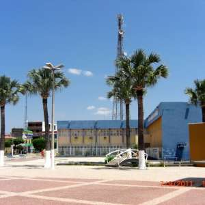
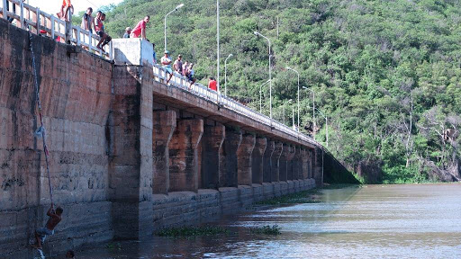

Informações técnicas sobre relevo, população, IDH etc.
| INFORMAÇÕES | |
|---|---|
| Municípios limítrofes | Norte: Santa Quitéria, Leste: Madalena e Quixeramobim, Sul: Pedra Branca, Oeste: Monsenhor Tabosa, Tamboril e Independência. |
| Fundação | 21 de novembro de 1864 (156 anos) |
| Área total | 2 836,774 km² |
| Clima | Semi-árido |
| IDH | 0,598 — baixo |
| PIB | R$ 230 651,000 mil |
| INFORMAÇÕES TERRITORIAIS | |
|---|---|
| Número de habitantes | 54 470 habitantes |
| Superfície de Boa Viagem |
283 676 hectares
2836,76 km² |
| Densidade populacional | 19,2 ha./km² |
| Altitude de Boa Viagem | 306 metros de altitude |
| Coordenadas geográficas decimais |
Latitude:
-5.12798
Longitude: -39.733 |
| Coordenadas geográficas sexagesimais | Latitude: 5° 7' 41'' Sul , Longitude: 39° 43' 59'' Oeste |
| INFORMAÇÕES DO MUNICÍPIO | |
|---|---|
| Endereço da Prefeitura Municipal de Boa Viagem |
Boa Viagem
Prefeitura de Boa Viagem
Monsenhor José Cândido, 100 BOA VIAGEM - CE, 63870-000 Brasil |
| Telefone da prefeitura |
(88) 3427-7001
Internacional: +55 88 3427-7001 |
| Fax |
(88) 3427-2322
Internacional: +55 88 3427-2322 |
| Endereço electrónicoda prefeitura |
Não disponível
|
| Site oficial do município | boaviagem.ce.gov.br |
| INFORMAÇÕES ADMINISTRATIVAS | ||
|---|---|---|
| Prefeito de Boa Viagem | JOSE CARNEIRO DANTAS FILHO | |
| Partido politico | SOLIDARIED | |
| INFORMAÇÕES DE TRANSPORTE | |
|---|---|
| Transporte urbano disponível | Não disponível |
| Aeroporto |
Aeroporto de Sobral 174.4 km
Aeroporto Regional do Cariri
238.3 km
Aeroporto Internacional Pinto Martins
201 km
|
| INFORMAÇÕES DE DISTÂNCIA A OUTRAS CIDADES | ||
|---|---|---|
| São Paulo : 2180 km | Rio de Janeiro : 2014 km | Brasília : 1486 km |
| Salvador : 883 km | Belo Horizonte : 1698 km | Manaus : 2347 km |
| Curitiba : 2478 km | Fortaleza : 205 km mais perto | Goiânia : 1653 km |
| Belém : 1057 km | Porto Alegre : 3023 km | Guarulhos : 2159 km |
| Campinas : 2130 km | São Luís : 584 km | Recife : 628 km |
| Distância calculada em linha reta! | ||
Conheça mais sobre a história da Boa Viagem.
Boa Viagem é um município brasileiro do estado do Ceará, localizado praticamente no centro do estado do Ceará, na microregião do Sertão de Quixeramobim, mesorregião dos Sertões Cearenses. Possui um Aeroporto, o Aeroporto Coronel Virgílio Távora, destinado a aeronaves de pequeno porte.
Antigamente era um povoado denominado Cavalo Morto, e se transformou em distrito em 1862 já como o nome de Boa Viagem, e em 1864 foi elevada à categoria de vila, sendo desmembrada do município de Quixeramobim. Em 1892, a partir de uma localidade, foi criado o primeiro distrito de Boa Viagem, denominado Olinda. Em 1931, Boa Viagem é rebaixada a distrito de Quixeramobim. Em 1936, Boa Viagem é novamente elevada à categoria de vila, novamente desmembrada de Quixeramobim, e já é formada por 2 distritos: o distrito-sede (Boa Viagem) e Olinda. Em 1938 é elevada à categoria de cidade, e no mesmo ano a localidade Socorro torna-se o segundo distrito de Boa Viagem, tendo suas terras desmembradas do distrito de Olinda. Em 1943o distrito de Olinda mudou o nome para Jacampari, e o distrito de Socorro passa a se chamar Ibuaçu. Em 1951 a localidade Domingos da Costa torna-se o terceiro distrito de Boa Viagem. Em 1963 nasce mais um distrito: Guia. Já em 1999 mais dois distritos: Águas Belas e Ipiranga. Em 2001 são criados mais 5 distritos: Massapê dos Paés, Boqueirão, Várzea da Ipueira, Olho dÁgua dos Facundos e Poço da Pedra.
Saiba mais sobre os melhores lugares e o que fazer em Boa Viagem.
Com o intuito de ampliar e preservar as memórias da terra boa-viagense, sentiu-se a necessidade de iniciar uma campanha de arrecadação de diversos objetos para a implantação do nosso museu. Destarte, quando foi elaborado o Plano de Ações Culturais da administração do Dr. Fernando Antônio Vieira Assef, inerente ao período de 2001/2004, foi incluído em suas metas de trabalho a criação do Museu Municipal de Boa Viagem - Ceará. Então, sem perda de tempo, iniciou-se um trabalho de mobilização junto à comunidade local com a finalidade de solicitar-lhes peças antigas. Cientes da importância do veemente apelo, muitas pessoas passaram a efetuar valiosas doações. A princípio, nos instalamos em uma das dependências da Prefeitura Municipal. O museu foi transferido, em agosto de 2004, para o antigo prédio que abrigou durante longos anos o Cartório Eleitoral, localizado na Rua José Rangel de Araújo, 171, Centro. No dia 28 de dezembro de 2004, as 17:00, foi realizada a inauguração simbólica. Foi criada pela Lei nº 897 de 2004, sancionada pelo Prefeito da época, Dr. Fernando Antônio Vieira Assef, no dia 23 de dezembro de 2004, recebendo o nome do professor Cícero Pinto do Nascimento. De agosto de 2004 a 15 de fevereiro de 2005 (dia em que o museu foi fechado) , contamos com a valiosa colaboração da funcionária Albaniza Jales Fernandes que, das 08:00 as 12:00, atendia aos visitantes e doadores.Em 21 de março de 2005, já com a Secretaria de Cultura, Turismo e Lazer (da Administração Boa Viagem em Boas Mãos) bem estruturada, tivemos sua reabertura. A partir de então, passamos a contar com os serviços do funcionário Francisco Antônio Gonzaga Vieira, visando à valorização e preservação do patrimônio cultural. A administração atual disponibilizou a professora e escritora Antonia de Lima Marinho (Zilda Marinho) que, desde o dia 1º de fevereiro de 2006, vem prestando seus valiosos serviços ao museu. Participou, em Fortaleza, dos cursos: Ação Educativa nos Museus; Gestão, Documentação, Restauração de Acervos; II Fórum Estadual de Museus; e a Conferência sobre a Política Nacional de Museus. Em abril de 2006, a administração doou dez mesas para a aposição de objetos e propiciou a restauração de onze peças. No dia 12 de maio do mesmo ano, o museu foi transferido para o prédio que foi sede da prefeitura e da Secretaria de Cultura, Turismo e Lazer, localizado na Rua José Rangel de Araújo, 144, Centro. Em 18 de maio, já em novas instalações, tivemos sua reinauguração com uma exposição do acervo e palestra sobre a importância do museu para a preservação da memória e um maior conhecimento da história.O acervo foi conseguido através de campanhas de arrecadação de objetos antigos junto à população de Boa Viagem, que muito colaborou e continua colaborando para a ampliação do museu.

O Açude Antônio Ferreira Antero, conhecido como Fogareiro, é um açude brasileiro que está localizado no estado do Ceará. Está construído sobre o leito do rio Quixeramobim, no município de mesmo nome, e faz parte da bacia do rio Banabuiú. Suas águas se estendem até o município de Boa Viagem. Suas obras foram realizadas pelo DNOCS, sendo concluídas em 1996. É uma barragem de tipo terra homogênea, com capacidade de armazenamento de água de 118.820.000 metros cúbicos.

Veja como chegar nos melhores pontos de Boa Viagem